Антоновка

Антоновка — один из главных сортов не только Фатежских садоводов, но и всей России. В ней множества полезных биоактивных веществ, пектина, витаминов.
Белый налив

Белый налив считается ранним сортом российскй селекции, в разных местностях России он имеет различные названия, такие как Долгостебелка, Пудовщина, Бель.
Афродита
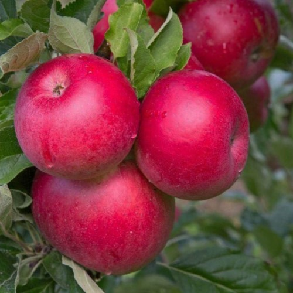
Раннезимний сорт, получен во Всероссийском НИИ селекции плодовых культур из семян от свободного опыления в 1981 году иммунной к парше.
Красивое

Название данного сорта соответствует действительности. Плоды очень красивые, небольшого размера, максимум с мяч от большого тенниса.
Былина

Зимний сорт Всероссийского НИИ генетики и селекции плодовых растений им. И.В. Мичурина, получен от скрещивания сортов Прима и Бессемянка мичуринская.
Богатырь
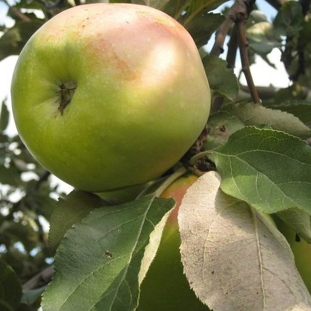
Зимний сорт Всероссийского НИИ генетики и селекции плодовых растений им. И.В. Мичурина. Получен от скрещивания сортов Антоновка обыкновенная и Ренет Ландсбергский.
Болотовское

Сорт яблони Болотовское был создан в 1977 году в Научно-исследовательском центре селекции плодовых культур.
Рождественское

Новый триплоидный сорт яблони с плодами раннезимнего срока созревания, полученный во Всероссийском НИИ селекции плодовых культур в 1985 году
Джонаголд

Позднеосенний триплоидный сорт. Выведен в CША на Женевской опытной станции при скрещивании сортов Голден Делишес и Джонатан
Июльское черненко
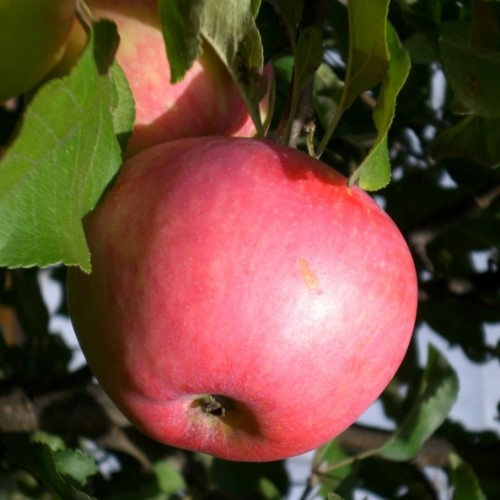
Раннелетний сорт селекции Всероссийского научно-исследовательского института генетики и селекции плодовых растений им. И.В. Мичурина.
Кандиль Орловский

Данный сорт яблони был выведен сравнительно недавно в результате широкомасштабной работы ученых Всероссийского НИИ селекции плодовых культур.
Лобо

Имеет плоды крупного размера, весом до 180 г.. Изначальный окрас яблок желто-зеленый, но в период созревания плоды покрываются большим красным румянцем.
Мельба

Сорт канадского происхождения с плодами позднелетнего созревания. Выведен в 1898 году в Оттаве (Канада) путем посева семян сорта Мекинтош от свободного опыления.
Память Мичурина
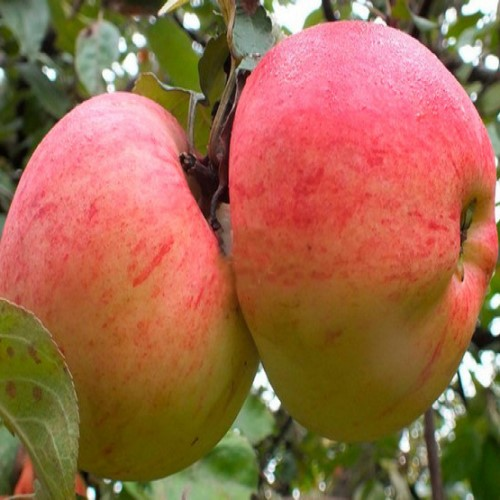
Позднезимний сорт, полученный во ВНИИС им. И. В. Мичурина, из семян сорта Шампанрен-китайка от свободного опыления. Автор С. И. Исаев.
Синап северный
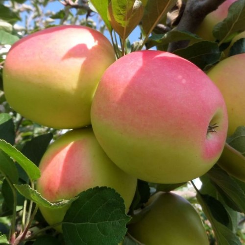
Позднезимний сорт. Получен во ВНИИС им. И.В. Мичурина из семян сорта Кандиль-китайка от свободного опыления. Автор сорта С.И. Исаев.
Орлик

Сорт Орлик был выведен на Орловской зональной плодово-ягодной опытной станции в 1959 году путем скрещивания сортовых яблонь Мекинтош и Бессемянки Мичуринской.
Орловское полосатое

Позднеосенний сорт. Гибрид Мекинтоша и Бессемянки мичуринской. Один из лучших для Нечерноземья, сорт зимостойкий, устойчивый к парше плодов и листьев.
Осеннее полосатое
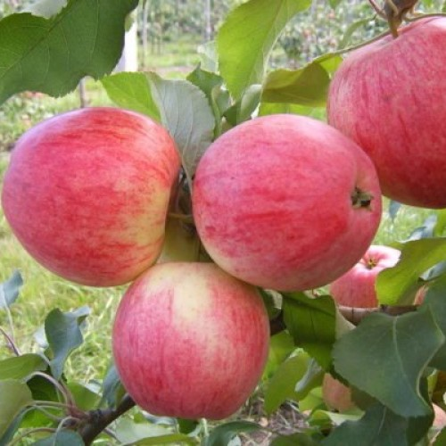
Один из самых распространенных осенних сортов народной селекции. Происходит из прибалтийских стран, является излюбленным сортом в средней полосе России.
Слава победителям
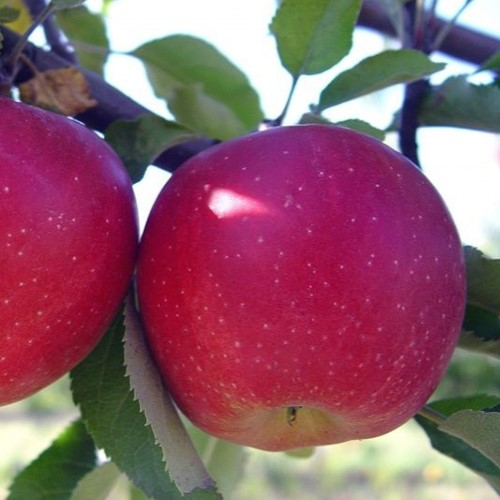
Осенний сорт Всероссийского НИИ генетики и селекции плодовых растений им. И.В. Мичурина Получен от скрещивания сортов Прима и Бессемянка мичуринская.
Скала

Осенний сорт Всероссийского НИИ генетики и селекции плодовых растений им. И.В. Мичурина Получен от скрещивания сортов Прима и Бессемянка мичуринская.
Спартан
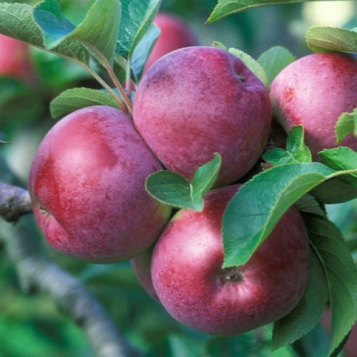
Сорт канадского происхождения с плодами зимнего созревания. Получен в 1926 году на опытной станции в Саммерленде от скрещивания сортов Мекинтош и Желтый Ньютаун.
Свежесть
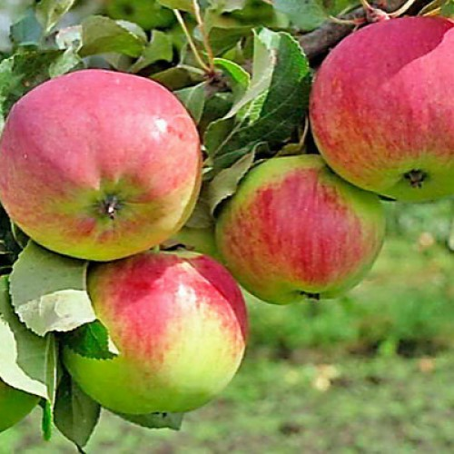
Позднезимний сорт яблок, выведенный С. Ф. Черненко в ЦГЛ им. И. В. Мичурина от скрещивания Антоновки обыкновенной с Ренетом Симиренко.
Веньяминовское

Зимний, иммунный к парше сорт Всероссийского НИИ селекции плодовых культур. Авторы сорта: Е.Н. Седов, З.М. Серова, В.В. Жданов, Е.А. Долматов.
Йелси
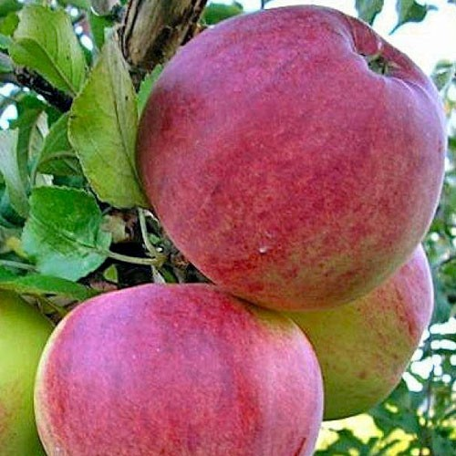
Сорт американского происхождения с плодами зимнего созревания. Выведен в 1860 году из семян вишнеплодной сибирской яблони.
Жигулёвское
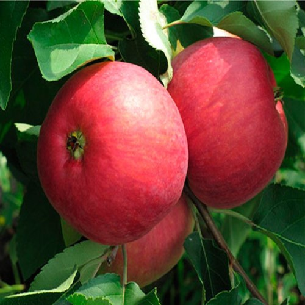
Позднеосенний сорт, выведен С.П. Кедриным на Самарской опытной станции по садоводству путем скрещивания сортов Боровинка обыкновенная и Вагнер призовой.
Строевское

Зимний иммунный к парше сорт Всероссийского НИИ селекции плодовых культур, получен посевом в 1982 году семян урожая 1981 года.
Ветеран
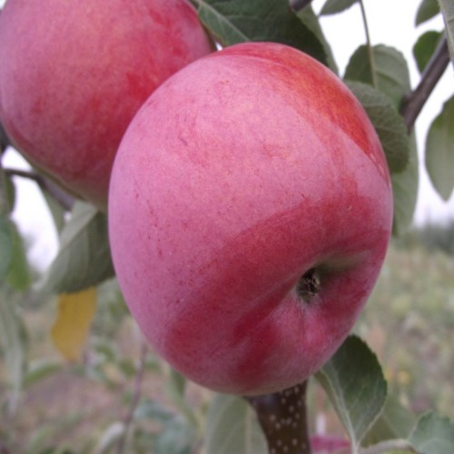
Ветеран — зимний сорт яблони, полученный во Всероссийском НИИ селекции плодовых культур в 1961 году через посев семян американского сорта Кинг от свободного опыления.